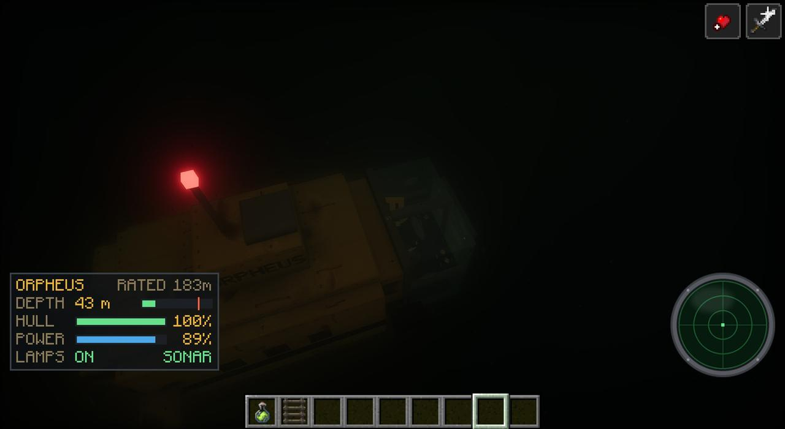

Off the edge of the Hub, with the First Signal behind a wall of static, the fall goes somewhere else. The Watcher tears a portal open under you both, and you come down onto an oil rig in a dead green sea that goes on forever.
Chapter Eight arrived in 1.62.0, and 1.63.0 to 1.63.3 filled its sea. The title card reads CHAPTER EIGHT, DEAD WATER, the deep is listening. Its realm is the Dead Water, a dimension of its own.
Getting there
In a world that reaches the Hub in 1.62.0 or later, it follows straight on from ENOUGH: you jump, and falling, he tears a blue portal of signs open under you. A world that already had Chapter Seven's landing at home gets here the next time someone takes the Remote to the Hub and goes off its edge. He's there, falling beside you:
not that way. not this time.
hold on.
Either way you come out over the rig's helipad and land, and he lands after you, crouched (Dead Water).
...we're out.
it's awake now. the first signal. it'll come for me - then for you.
but it can't hear us here. not through all this water.
take this. it'll get you back - to the hub, and home.
...no. nothing of mine works right here.
then you stay. there's food. beds. i built this place a long time ago - for when i needed somewhere to hide.
fix it. the big ones down there sing on its frequency - cut out what they sing with.
He gives you the Remote, and it breaks in your hand, turning into the Broken Remote (press it and "It sparks. The warm button's cold. Nothing."). Then he goes over the rail into the sea. The chat says what you need: "Chapter Eight: Dead Water. The Remote's broken - mend it with a Static Leviathan's Signal Organ and a copper ingot. They live deep."
The rig
An oil platform standing alone in the Dead Water, four great legs of rusted steel going down into the black. He built it a long time ago, he says, and it's been waiting with its lights on and its larders full:
- The cellar deck: the moon pool (a square of open water with a ladder down into it), the dive locker, the pumps, the pens (chickens, sheep, cows and a pig, let out when you arrive), the boat dock below it with two boats, and since 1.63.0 the sub bay off the dock, where the submarine Orpheus lies in its clamps.
- The main deck: the quarters (eight beds), the mess and its kitchen, the infirmary, the workshop, the stores and the greenhouse (crops under glass, water channels, a composter).
- The upper deck: the control room, the radio room, the armoury, and the helipad you came down on.
- The derrick in the middle with red lights at its crown, two cranes, the flare stack out over the sea that never goes out, and the lifeboats.
You're stranded until the Remote is mended. The rig's beds set your spawn but you can't sleep in them ("You can't sleep here. The sea won't let you."). Die out here and the sea brings you back to the quarters: "The sea brings you back. Nothing leaves the Dead Water while the Remote's broken." You can't lose the Broken Remote either; it's always still in your pocket.
The rig's chests (the armoury, the dive locker, the mess, the stores, the sub bay) have what you'll need for the sea: the Harpoon Gun (hold to pump, let go to fire, in water or out; it reels you to the catch or the catch to you) and Harpoon Bolts, Marine Flares (a minute of red light, even underwater), Rig Rations and Air Tanks (a dozen breaths). Thirst and the cold (also new in 1.62.0) follow you here, so keep a canteen filled too. All of it is on Every item and block.
The Watcher's chart
A little after you come down, the Watcher presses a rolled chart into your hands:
here. the sea, as far as i ever charted it. every water has its own colour.
the black, hatched in red - that's the dead zone. the black below.
nothing down there is small. don't take the little boat over it.
The Watcher's Chart covers four thousand blocks of sea round the rig, every water in its own colour and named, the floor's depths shaded and contoured, and the Black Below hatched in red as THE DEAD ZONE. Held, it's a map of the stretch you're in (a thousand blocks a square), with you as an arrow, the others down there with you, and the rig. Use it to unroll the whole chart: scroll to zoom, drag to look round, R to come back to you. Point at a water and you get his note on it. A Map, a Glow Ink Sac and a Prismarine Shard make another.
The twelve waters
Out past the rig the sea is split into twelve waters, each with its own colour and murk, its own floor, plants, life, sound, music and light. The notes are his, from the chart.
| Water | What it's like | His note |
|---|---|---|
| The Grey Shelf | The rig's own grey-green. | "Grey water over grey silt. The rig stands in it. Nothing here is in a hurry - mostly." |
| The Haemal Reach | Blood-red water, thick as soup. | "The water's thick with blood. Clotfish come in swarms; the Siphons wait for them to pass." |
| The Wireweed | Dark green, a forest of singing wire. | "Weed like wire, and it sings. The Choir Eels nest in it. Don't touch the bright ones." |
| The Lantern Fields | Black-blue and clear, lit by its plants. | "Lights in the dark as far as you can see. Most of them are bulbs. Some of them aren't." |
| The Ossuary Flats | Milky, a floor of bone sand. | "A plain of bone. Whatever died here, died big. The Stiltfins pick it clean." |
| The Brine Sink | Sick yellow-green, with lakes of brine that eat you. | "The brine pools eat what falls in. The water's sour, and the Puffbloats like it." |
| The Molar Reef | Teal and pink, a reef of teeth and gum. | "Teeth, grown into a reef. The Grinners live in it. They smile at you." |
| The Drowned Mycelia | Violet, spores in the water. | "Mushrooms the size of towers, drowned. Their spores burst if you brush them." |
| The Rime Shelf | Cold and clear under a roof of ice. | "Ice under the sea. Things are frozen in it. Some of them wake up." |
| The Ember Vents | Rust-orange, smoking vents. | "Vents roaring up from below. Warm. The Mantlecrabs crowd round them - mind your power." |
| The Carrier Wave | Blue-grey, static shimmering through it. | "The static's loudest here. The water hums. Your instruments won't like it." |
| The Black Below | The abyss: near black, two hundred blocks deeper, nothing alive in it but one thing. | "THE DEAD ZONE. The floor drops away and doesn't stop. The leviathans live down there. Don't." |
What lives in them runs from cute to eldritch: gentle things like the one-eyed Pipeye and the singing Hymnback whales, hunters like the Clotfish, the Hookjaw (which steals your metal) and the Mantlecrab (its pulse kills every light near it, the submarine's too), and the Mouth of the Floor, buried in the floors of the Grey Shelf, the Ossuary Flats and the Molar Reef with only a ring of rocks showing. Pass over it and its jaws open out of the sand and swallow you, submarine and all. Each water also has places of its own to find, from sunken lifeboats and a heart the size of a house to a frozen outpost with its people still in it, and The Anchor on the floor of the Black Below. All of it is on the Dead Water and in the bestiary.
Orpheus
The submarine Orpheus waits in its own sub bay off the rig's dock (1.63.0; it's added to rigs that were already up). Since 1.63.2 it's a real submarine thirteen blocks long, with a cabin you walk about in, for up to four people. Climb in by its hatch and down the ladder ("The helm is up in the bow, under the dome; the bunks, lockers, galley and battery are aft. Walk about her, and use whatever you're looking at.").
- At the bow, under the dome: the helm (take it and drive; crouch to step away), the floodlight switches and the sonar console.
- Down its length: the chart table (the Watcher's chart), two bunks (lie down to heal, once every two minutes), lockers (27 slots, kept with the sub), a workbench, the galley (its hot plate cooks what you hold), the battery bank (charged with copper ingots, redstone or a block of redstone), the repair board (iron ingots patch the hull and the dome's cracks) and the motor.
- Driving: W/S thrust, A/D turn, jump to rise, sprint to dive. Use switches the floodlights (they light the water ahead, and draw things that love light, and things that hunt it), attack works its claw, and swap-hands pings the sonar. A submarine's sonar shows where a Mouth of the Floor lies.
- Depth: it's rated to 183 m down. Past that the hull creaks and the glass cracks, and at nothing it implodes. Pressure Plating (iron blocks, Needle Teeth, Shroud Hide and obsidian, or found down there) lets it go as deep as the sea goes.
- Lost it? The bay's console builds another for 16 iron ingots and 8 glass.

The Static Leviathan
What you need lives deep. The Signal Organ comes from the Static Leviathan, a boss with its own bar, forty-five blocks long since 1.63.2, with fangs, tusks and its ribs showing through its rotted hide. It charges, it swallows you whole, and it sings on the Remote's frequency. Go more than forty blocks under the surface, anywhere but the Black Below, and now and then one comes up out of the dark after you. (Back home they live in the Overworld's new deep oceans too, down in the Hadal Dark and the Trench.)
The Black Below
Don't take the little boat over it. In the abyss there's only the sound of the ocean. Stay deep in it and something notices: a rumble from below, and the Undertow comes up out of the dark, a thing three thousand blocks long whose head is a flower of jaws.
Since 1.63.3 it doesn't come straight at you. It stalks you, out where you aren't looking, keeping pace ("Something vast is keeping pace with you, out in the dark."). You can't see thirty blocks down there, but you can see its eyes, a cluster of pale points that turn as you turn. It learns you, and tells you so:
It has learned how you move.
It saw you run for the surface. It will be waiting under you.
It has learned your light. It keeps out of it.
It knows you now.
What it learns, it keeps. It eats when it's hungry ("It is hungry."). Only when it's starving does it roar and come for you; before that, if a lost whale is near, it eats the whale instead ("It has fed. For now."), so a whale nearby can save you. When it comes, it roars (a submarine's glass cracks and its power dies), lunges and swallows you whole. Run for the surface and it breaches after you, hundreds of blocks into the sky. It only goes back down when you leave the Black Below.
Getting home
Craft the Broken Remote, the Static Leviathan's Signal Organ and a copper ingot together (Back On Air): "The Remote works again. Press it: the Hub (and in the Hub, home). Crouch and press it: back to the rig."
The Dead Water stays yours to come back to. The rig and each of the twelve waters have music of their own.
What comes next
The First Signal is still awake, past the wall in the Hub. "it'll come for me - then for you."